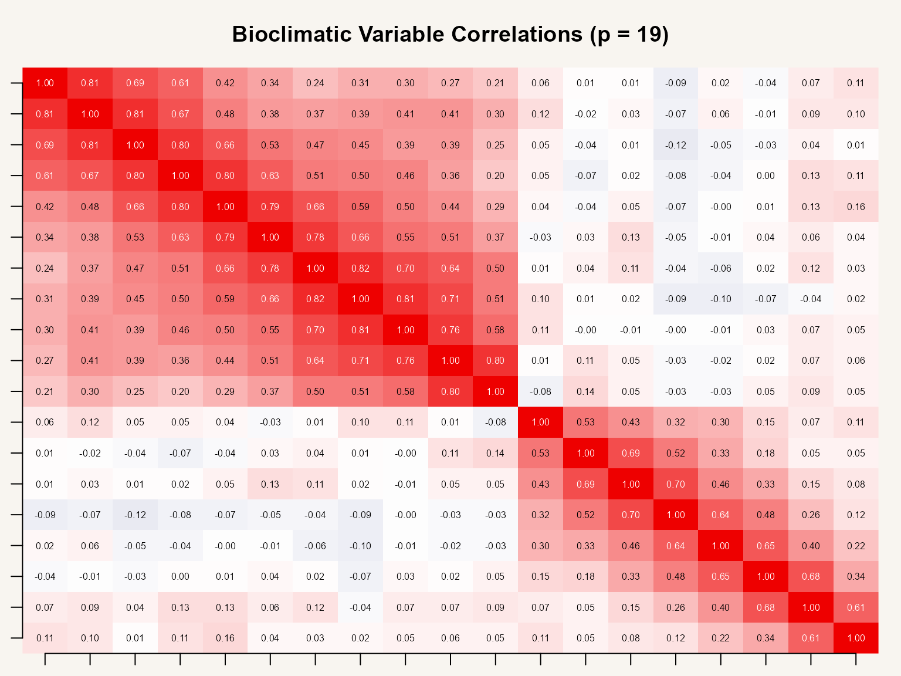
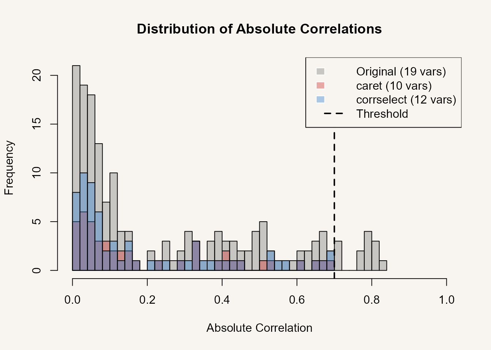
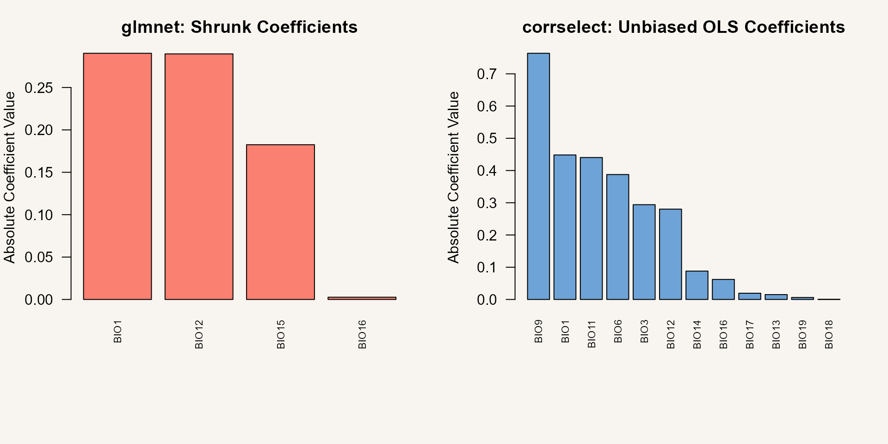

Comparison with Alternatives
Gilles Colling
2025-11-25
Source:vignettes/comparison.Rmd
comparison.RmdOverview
This vignette compares corrselect’s graph-theoretic approach to four established methods for multicollinearity management and variable selection:
- caret::findCorrelation() - Greedy correlation-based pruning
- Boruta - Random forest permutation importance
- glmnet - L1/L2 regularization (LASSO/Ridge)
- Manual VIF removal - Iterative variance inflation factor thresholding
Each comparison examines algorithmic differences, performance
characteristics, and appropriate use cases. Evaluations use the
bioclim_example dataset (19 bioclimatic variables,
).
See vignette("theory") for mathematical foundations. See
vignette("quickstart") for usage examples.
Evaluation Dataset
data(bioclim_example)
predictors <- bioclim_example[, -1] # Exclude response
response <- bioclim_example[, 1]
cat("Variables:", ncol(predictors), "\n")
#> Variables: 19
cat("Observations:", nrow(predictors), "\n")
#> Observations: 100
cat("Response: species_richness (continuous)\n")
#> Response: species_richness (continuous)
cor_matrix <- cor(predictors)
# Correlation heatmap
col_pal <- colorRampPalette(c("#3B4992", "white", "#EE0000"))(100)
par(mar = c(1, 1, 3, 1))
nc <- ncol(cor_matrix)
nr <- nrow(cor_matrix)
image(seq_len(nc), seq_len(nr), t(cor_matrix[nr:1, ]),
col = col_pal,
xlab = "", ylab = "", axes = FALSE,
main = "Bioclimatic Variable Correlations (p = 19)",
zlim = c(-1, 1))
axis(1, at = seq_len(nc), labels = colnames(cor_matrix), las = 2, cex.axis = 0.7)
axis(2, at = nc:1, labels = colnames(cor_matrix), las = 2, cex.axis = 0.7)
for (i in seq_len(nc)) {
for (j in seq_len(nr)) {
text_col <- if (abs(cor_matrix[j, i]) > 0.6) "white" else "black"
text(i, nr - j + 1, sprintf("%.2f", cor_matrix[j, i]),
cex = 0.5, col = text_col)
}
}
Block structure present: correlations range from -0.15 to 0.97.
Comparison 1: caret::findCorrelation()
Method
caret’s findCorrelation() applies greedy iterative
removal:
- Identify pair with maximum
- Remove variable with larger mean absolute correlation
- Repeat until all
Non-deterministic: results depend on internal ordering. Typically removes more variables than graph-theoretic methods.
Execution
if (requireNamespace("caret", quietly = TRUE)) {
# Apply caret's greedy algorithm
to_remove_caret <- caret::findCorrelation(cor_matrix, cutoff = 0.7)
result_caret <- predictors[, -to_remove_caret]
cat("caret results:\n")
cat(" Variables retained:", ncol(result_caret), "\n")
cat(" Variables removed:", length(to_remove_caret), "\n")
cat(" Removed:", paste(colnames(predictors)[to_remove_caret], collapse = ", "), "\n")
}
#> caret results:
#> Variables retained: 10
#> Variables removed: 9
#> Removed: BIO8, BIO7, BIO5, BIO4, BIO3, BIO9, BIO1, BIO11, BIO15
# Apply corrselect (exact mode)
result_corrselect <- corrPrune(predictors, threshold = 0.7, mode = "exact")
cat("\ncorrselect results:\n")
#>
#> corrselect results:
cat(" Variables retained:", ncol(result_corrselect), "\n")
#> Variables retained: 12
cat(" Variables removed:", length(attr(result_corrselect, "removed_vars")), "\n")
#> Variables removed: 7
cat(" Removed:", paste(attr(result_corrselect, "removed_vars"), collapse = ", "), "\n")
#> Removed: BIO2, BIO4, BIO5, BIO7, BIO8, BIO10, BIO15corrselect retains more variables () via maximal clique enumeration while satisfying identical threshold constraint.
Distribution Comparison
# Extract correlations
cor_orig <- cor(predictors)
cor_corrselect <- cor(result_corrselect)
if (requireNamespace("caret", quietly = TRUE)) {
cor_caret <- cor(result_caret)
# Overlaid histogram comparing all three
hist(abs(cor_orig[upper.tri(cor_orig)]),
breaks = 30,
main = "Distribution of Absolute Correlations",
xlab = "Absolute Correlation",
col = rgb(0.5, 0.5, 0.5, 0.4),
xlim = c(0, 1))
hist(abs(cor_caret[upper.tri(cor_caret)]),
breaks = 30,
col = rgb(0.8, 0.2, 0.2, 0.4),
add = TRUE)
hist(abs(cor_corrselect[upper.tri(cor_corrselect)]),
breaks = 30,
col = rgb(0.2, 0.5, 0.8, 0.4),
add = TRUE)
abline(v = 0.7, col = "black", lwd = 2, lty = 2)
legend("topright",
legend = c(
paste0("Original (", ncol(predictors), " vars)"),
paste0("caret (", ncol(result_caret), " vars)"),
paste0("corrselect (", ncol(result_corrselect), " vars)"),
"Threshold"
),
fill = c(
rgb(0.5, 0.5, 0.5, 0.4),
rgb(0.8, 0.2, 0.2, 0.4),
rgb(0.2, 0.5, 0.8, 0.4),
NA
),
border = c("white", "white", "white", NA),
lty = c(NA, NA, NA, 2),
lwd = c(NA, NA, NA, 2),
col = c(NA, NA, NA, "black"),
bty = "o",
bg = "white")
}
Comparison
| Feature | caret | corrselect |
|---|---|---|
| Algorithm | Greedy iterative removal | Maximal clique enumeration |
| Optimality | Heuristic | Exact (mode = “exact”) |
| Reproducibility | Non-deterministic | Deterministic |
| Variables retained | optimal | Maximal |
| Forced variables | No | Yes (force_in) |
| Mixed data | No | Yes (assocSelect) |
| Complexity | greedy, exact |
Comparison 2: Boruta
Method
Boruta tests variable importance via random forest permutation:
- Create shadow features (permuted copies)
- Fit random forest on original + shadow features
- Test:
- Iteratively confirm/reject until convergence
Orthogonal objective: Boruta selects predictive variables (supervised). corrselect removes redundant variables (unsupervised).
Execution
if (requireNamespace("Boruta", quietly = TRUE)) {
# Boruta: "Which variables predict species_richness?"
set.seed(123)
boruta_result <- Boruta::Boruta(
species_richness ~ .,
data = bioclim_example,
maxRuns = 100
)
cat("Boruta variable importance screening:\n")
print(table(boruta_result$finalDecision))
important_vars <- names(boruta_result$finalDecision[
boruta_result$finalDecision == "Confirmed"
])
cat("\n Confirmed predictors:", length(important_vars), "\n")
cat(" ", paste(important_vars, collapse = ", "), "\n")
}
#> Boruta variable importance screening:
#>
#> Tentative Confirmed Rejected
#> 0 6 13
#>
#> Confirmed predictors: 6
#> BIO12, BIO13, BIO14, BIO15, BIO16, BIO17
# corrselect: "Which variables are redundant?"
corrselect_result <- corrPrune(predictors, threshold = 0.7)
cat("\ncorrselect multicollinearity pruning:\n")
#>
#> corrselect multicollinearity pruning:
cat(" Non-redundant variables:", ncol(corrselect_result), "\n")
#> Non-redundant variables: 12
cat(" ", paste(names(corrselect_result), collapse = ", "), "\n")
#> BIO1, BIO3, BIO6, BIO9, BIO11, BIO12, BIO13, BIO14, BIO16, BIO17, BIO18, BIO19Different variable sets selected: Boruta optimizes prediction; corrselect minimizes redundancy.
Comparison
| Criterion | Boruta | corrselect |
|---|---|---|
| Objective | Predictive power | Redundancy removal |
| Criterion | Permutation importance | |
| Response | Required | Not required |
| Multicollinearity | Indirect | Direct |
| Stochastic | Yes | No |
| Complexity | High ( forests) | Low (graph) |
Sequential Application
# Stage 1: Correlation-based pruning
data_pruned <- corrPrune(raw_data, threshold = 0.7)
# Stage 2: Importance testing
boruta_result <- Boruta::Boruta(response ~ ., data = cbind(response, data_pruned))
final_vars <- names(boruta_result$finalDecision[
boruta_result$finalDecision == "Confirmed"
])
# Stage 3: Final model
final_model <- lm(response ~ ., data = cbind(response, data_pruned)[, c("response", final_vars)])Stage 1 removes redundancy (reproducible). Stage 2 tests importance (stochastic). Stage 3 fits model with non-redundant, predictive variables.
Comparison 3: glmnet (LASSO/Ridge)
Method
glmnet minimizes regularized loss:
- : LASSO (L1 penalty, sparse )
- : Ridge (L2 penalty, shrinkage)
- : Cross-validation selected
Difference: glmnet performs soft selection (shrinkage) optimizing prediction. corrselect performs hard selection (removal) based on correlation structure.
Execution
if (requireNamespace("glmnet", quietly = TRUE)) {
# Fit LASSO with cross-validation
X <- as.matrix(predictors)
y <- response
set.seed(123)
cv_lasso <- glmnet::cv.glmnet(X, y, alpha = 1)
# Extract non-zero coefficients at lambda.1se (conservative choice)
coef_lasso <- stats::coef(cv_lasso, s = "lambda.1se")
selected_lasso <- rownames(coef_lasso)[coef_lasso[, 1] != 0][-1] # Remove intercept
cat("glmnet (LASSO, λ = lambda.1se):\n")
cat(" Variables retained:", length(selected_lasso), "\n")
cat(" ", paste(selected_lasso, collapse = ", "), "\n")
}
#> glmnet (LASSO, λ = lambda.1se):
#> Variables retained: 4
#> BIO1, BIO12, BIO15, BIO16
if (requireNamespace("glmnet", quietly = TRUE)) {
# Compare model performance
model_glmnet <- lm(species_richness ~ .,
data = bioclim_example[, c("species_richness", selected_lasso)])
model_corrselect <- lm(species_richness ~ .,
data = cbind(species_richness = response, result_corrselect))
cat("\nModel comparison (OLS on selected variables):\n")
cat(" glmnet: R² =", round(summary(model_glmnet)$r.squared, 3),
"with", length(selected_lasso), "predictors\n")
cat(" corrselect: R² =", round(summary(model_corrselect)$r.squared, 3),
"with", ncol(result_corrselect), "predictors\n")
}
#>
#> Model comparison (OLS on selected variables):
#> glmnet: R² = 0.983 with 4 predictors
#> corrselect: R² = 0.909 with 12 predictorsglmnet selects fewer variables () optimizing prediction. corrselect maximizes retention under correlation constraint.
Coefficient Comparison
if (requireNamespace("glmnet", quietly = TRUE)) {
par(mfrow = c(1, 2), mar = c(8, 4, 3, 2))
# glmnet coefficients (shrinkage)
coef_vals <- coef_lasso[coef_lasso[, 1] != 0, ][-1]
barplot(sort(abs(coef_vals), decreasing = TRUE),
las = 2,
main = "glmnet: Shrunk Coefficients",
ylab = "Absolute Coefficient Value",
col = "salmon",
cex.names = 0.7)
# corrselect: unbiased OLS coefficients
coef_corrselect <- coef(model_corrselect)[-1] # Remove intercept
barplot(sort(abs(coef_corrselect), decreasing = TRUE),
las = 2,
main = "corrselect: Unbiased OLS Coefficients",
ylab = "Absolute Coefficient Value",
col = rgb(0.2, 0.5, 0.8, 0.7),
cex.names = 0.7)
}
Left: L1 penalty shrinks coefficients toward zero (biased). Right: OLS on pruned variables (unbiased). glmnet optimizes prediction with shrinkage. corrselect preserves effect sizes.
Comparison
| Criterion | glmnet | corrselect |
|---|---|---|
| Objective | Prediction accuracy | Multicollinearity removal |
| Selection | Soft (shrinkage) | Hard (removal) |
| Coefficient bias | Yes (L1/L2) | No |
| Multicollinearity | Regularization | Pruning |
| Response | Required | Not required |
| Tuning | (cross-validation) | (user-specified) |
| Interpretability | Shrunk effects | Direct effects |
Comparison 4: modelPrune() vs Manual VIF Removal
Method
Variance Inflation Factor quantifies predictor multicollinearity:
where results from regressing on remaining predictors. Thresholds:
- VIF < 5: Low collinearity
- VIF < 10: Moderate (acceptable)
- VIF ≥ 10: High (problematic)
Manual approach: iteratively remove max(VIF) until all VIF < threshold.
Manual Implementation
# Manual iterative VIF removal
manual_vif_removal <- function(formula, data, threshold = 5, max_iter = 10) {
require(car)
# Get response variable name
response_var <- all.vars(formula)[1]
# Get predictor names (handles ~ . notation)
model <- lm(formula, data = data)
current_vars <- names(coef(model))[-1] # Exclude intercept
removed_vars <- character(0)
vif_vals <- car::vif(model)
while (max(vif_vals) > threshold && length(current_vars) > 1 && length(removed_vars) < max_iter) {
# Remove variable with highest VIF
var_to_remove <- names(which.max(vif_vals))
removed_vars <- c(removed_vars, var_to_remove)
cat("Iteration", length(removed_vars), ": Removing", var_to_remove,
"(VIF =", round(max(vif_vals), 2), ")\n")
# Update variable list and refit
current_vars <- setdiff(current_vars, var_to_remove)
new_formula <- as.formula(paste(response_var, "~", paste(current_vars, collapse = " + ")))
model <- lm(new_formula, data = data)
vif_vals <- car::vif(model)
}
list(model = model, iterations = length(removed_vars),
vif = vif_vals, removed = removed_vars, converged = max(vif_vals) <= threshold)
}
# Run manual VIF removal
if (requireNamespace("car", quietly = TRUE)) {
cat("Manual VIF removal (iterative):\n")
manual_result <- manual_vif_removal(species_richness ~ ., data = bioclim_example, threshold = 5)
cat("\nVariables kept:", length(manual_result$vif), "\n")
if (!manual_result$converged) {
cat("(Stopped at max_iter = 10; VIF threshold not yet reached)\n")
}
}
#> Manual VIF removal (iterative):
#> Loading required package: car
#> Loading required package: carData
#> Iteration 1 : Removing BIO2 (VIF = 5.83 )
#> Iteration 2 : Removing BIO7 (VIF = 5.66 )
#> Iteration 3 : Removing BIO5 (VIF = 5.03 )
#>
#> Variables kept: 16modelPrune() Comparison
# Run modelPrune
modelprune_result <- modelPrune(species_richness ~ ., data = bioclim_example, limit = 5)
cat("\nmodelPrune results:\n")
#>
#> modelPrune results:
cat("Variables removed:", attr(modelprune_result, "removed_vars"), "\n")
#> Variables removed: BIO2 BIO7 BIO5
cat("Variables kept:", length(attr(modelprune_result, "selected_vars")), "\n")
#> Variables kept: 16
# Extract final model
final_model <- attr(modelprune_result, "final_model")
if (requireNamespace("car", quietly = TRUE)) {
cat("\nFinal VIF values:\n")
print(round(car::vif(final_model), 2))
}
#>
#> Final VIF values:
#> BIO1 BIO3 BIO4 BIO6 BIO8 BIO9 BIO10 BIO11 BIO12 BIO13 BIO14 BIO15 BIO16
#> 2.09 3.68 3.81 2.57 4.03 4.27 4.96 3.06 1.76 2.51 3.11 3.01 2.43
#> BIO17 BIO18 BIO19
#> 2.88 2.82 1.70Visual: VIF Comparison
if (requireNamespace("car", quietly = TRUE)) {
# Compute VIF for original model
model_full <- lm(species_richness ~ ., data = bioclim_example)
vif_before <- car::vif(model_full)
# VIF after modelPrune
vif_after <- car::vif(final_model)
# Combined barplot
par(mar = c(8, 4, 4, 2))
all_vars <- unique(c(names(vif_before), names(vif_after)))
vif_combined <- data.frame(
before = vif_before[match(all_vars, names(vif_before))],
after = vif_after[match(all_vars, names(vif_after))]
)
vif_combined[is.na(vif_combined)] <- 0
vif_combined <- vif_combined[order(vif_combined$before, decreasing = TRUE), ]
# Show top 15
n_show <- min(15, nrow(vif_combined))
barplot(t(as.matrix(vif_combined[1:n_show, ])),
beside = TRUE,
las = 2,
main = "VIF Before and After modelPrune()",
ylab = "VIF",
col = c(rgb(0.8, 0.2, 0.2, 0.7), rgb(0.2, 0.5, 0.8, 0.7)),
cex.names = 0.6,
names.arg = rownames(vif_combined)[1:n_show])
abline(h = 5, col = "black", lwd = 2, lty = 2)
legend("topright",
legend = c("Before", "After", "Limit = 5"),
fill = c(rgb(0.8, 0.2, 0.2, 0.7), rgb(0.2, 0.5, 0.8, 0.7), NA),
border = c("white", "white", NA),
lty = c(NA, NA, 2),
lwd = c(NA, NA, 2),
col = c(NA, NA, "black"),
bty = "o",
bg = "white")
}![Side-by-side barplot showing VIF values before (red bars) and after (blue bars) applying modelPrune() for the top 15 variables ordered by initial VIF. Black horizontal dashed line marks the VIF limit of 5. Before pruning, many variables show high VIF values indicating severe multicollinearity. After modelPrune(), all retained variables have VIF below the threshold, and high-VIF variables are completely removed (shown as red-only bars), demonstrating automated and effective multicollinearity reduction.](comparison_files/figure-html/unnamed-chunk-14-1.png)
Summary
Method Selection
| Goal | Primary Method | Alternative |
|---|---|---|
| Redundancy removal (unsupervised) | corrPrune() | caret::findCorrelation() |
| VIF reduction (regression) | modelPrune() | Manual VIF |
| Predictive variable selection | Boruta | RF importance |
| Prediction accuracy | glmnet | Elastic net |
| Mixed data types | assocSelect() | Manual metrics |
| Forced variable constraints | corrselect (force_in) |
N/A |
| Exploratory (fast) | caret | corrPrune (greedy) |
corrselect Distinguishing Features
- Maximal clique enumeration: Optimal retention under constraint
- Deterministic: ELS and Bron-Kerbosch algorithms guarantee reproducibility
- Flexible: Forced variables, mixed types, greedy/exact modes
- Unbiased estimates: Hard removal preserves coefficient interpretability
- Model-agnostic: Correlation-based preprocessing
Integrated Workflow
# Correlation pruning
data_pruned <- corrPrune(raw_data, threshold = 0.7)
# VIF refinement
model_data <- modelPrune(response ~ ., data = data_pruned, limit = 5)
# Importance testing (optional)
if (requireNamespace("Boruta", quietly = TRUE)) {
boruta_result <- Boruta::Boruta(response ~ ., data = model_data)
important_vars <- names(boruta_result$finalDecision[
boruta_result$finalDecision == "Confirmed"
])
}
# Final model: OLS (interpretable) or glmnet (prediction)
final_model <- lm(response ~ ., data = model_data[, c("response", important_vars)])References
caret: Kuhn, M. (2008). Building predictive models in R using the caret package. Journal of Statistical Software, 28(5), 1-26. doi:10.18637/jss.v028.i05
Boruta: Kursa, M. B., & Rudnicki, W. R. (2010). Feature selection with the Boruta package. Journal of Statistical Software, 36(11), 1-13. doi:10.18637/jss.v036.i11
glmnet: Friedman, J., Hastie, T., & Tibshirani, R. (2010). Regularization paths for generalized linear models via coordinate descent. Journal of Statistical Software, 33(1), 1-22. doi:10.18637/jss.v033.i01
VIF: Belsley, D. A., Kuh, E., & Welsch, R. E. (1980). Regression Diagnostics: Identifying Influential Data and Sources of Collinearity. Wiley. doi:10.1002/0471725153
See Also
-
vignette("quickstart")- Interface overview and usage examples -
vignette("workflows")- Domain-specific workflows (genomics, ecology, surveys) -
vignette("advanced")- Algorithm selection and performance tuning -
vignette("theory")- Graph-theoretic foundations and formal proofs